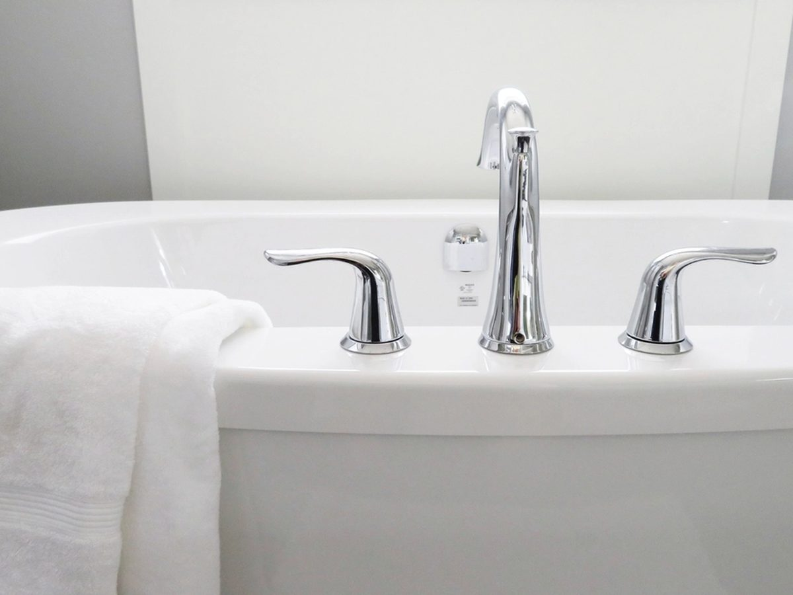

Гладкое основание — плохое сцепление
На глянцевой и засаленной поверхности материал держится слабо. Со временем под ним появляется воздух, и покрытие вздувается.
Современный способ восстановления покрытия: состав наливается на подготовленную поверхность и сам выравнивается. Разбираю по шагам, что происходит с ванной.
Что это
Наливная ванна — это технология, при которой на поверхность наносится жидкий материал, который распределяется по ней и выравнивается сам. Он не требует идеального «покрасочного» движения рукой, поэтому покрытие получается ровным по всей площади: и на дне, и на бортах, и в скруглениях.
Эмалировка и покраска — другой подход: тонкий слой наносится вручную. Он проще в исполнении, но заметно хуже держится и со временем скалывается и отслаивается. Именно поэтому я работаю только наливным способом.

Гладкое и ровное покрытие
Этапы
Порядок не меняется: каждый следующий этап опирается на предыдущий. Пропустить подготовку и «просто налить» — значит получить покрытие, которое отойдёт.
Смотрю состояние ванны: корпус, борта, слив, примыкания. Понимаю, даст ли наливное покрытие нормальный результат именно здесь.
Закрываю стены, пол и сантехнику, чтобы работа не превратилась в уборку всей квартиры.
Убираю то, что уже не держится. Новый материал нельзя класть на старое отслаивающееся основание.
Самый долгий этап. За счёт зачистки достигается хорошая адгезия: покрытию есть за что держаться.
Материал наносится и распределяется по поверхности, выравниваясь сам. Отсюда гладкий и ровный результат.
Покрытию нужно время, чтобы схватиться. Точный срок я называю на месте — он зависит от материала и условий в помещении.
Адгезия
Почти все жалобы на восстановленные ванны — это жалобы на подготовку, а не на материал. Если поверхность зачищена как следует, покрытие держится и не идёт пузырями.
На глянцевой и засаленной поверхности материал держится слабо. Со временем под ним появляется воздух, и покрытие вздувается.
Поверхность доводится до состояния, при котором у материала появляется надёжная механическая связь с основанием.
Держится по всей площади, включая дно и скругления, где нагрузка максимальная.
При нормальном уходе о проблемах с ванной можно забыть надолго. Это и есть смысл делать один раз и хорошо.
Вопросы
Нет. Все работы делаются на месте, в вашей ванной комнате. Демонтаж и вывоз не нужны.
Потому что это другой результат. Тонкий слой эмали или краски со временем скалывается и отслаивается, и через несколько лет ванна снова выглядит плохо. Я берусь только за то, что сам считаю нормальной работой.
Зависит от состояния ванны: сколько старого покрытия снимать и насколько сложная геометрия. Точный срок назову после осмотра — и постараюсь не растягивать.
Да. Опишите ванну — назову ориентир и фиксированную стоимость. После осмотра цена не меняется.
Позвоните: скажу, подойдёт ли наливная ванна в вашем случае, и назову цену.